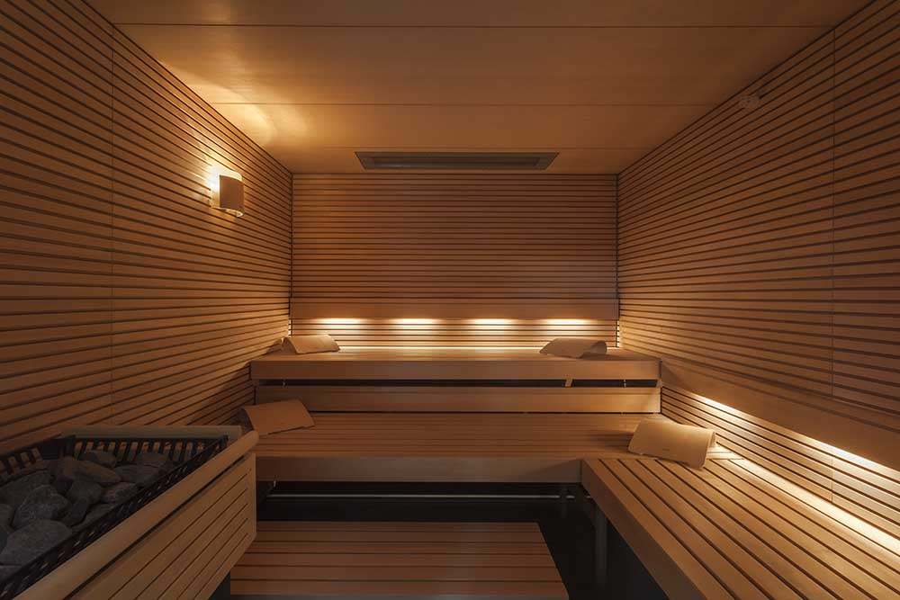
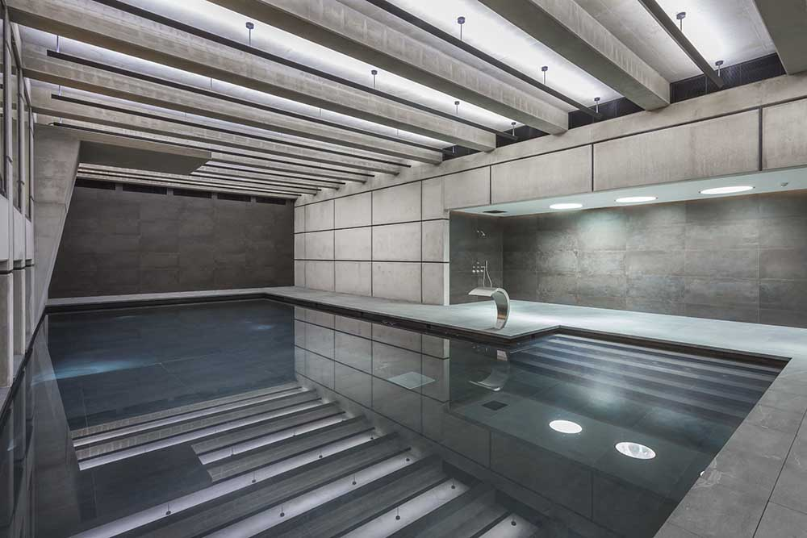
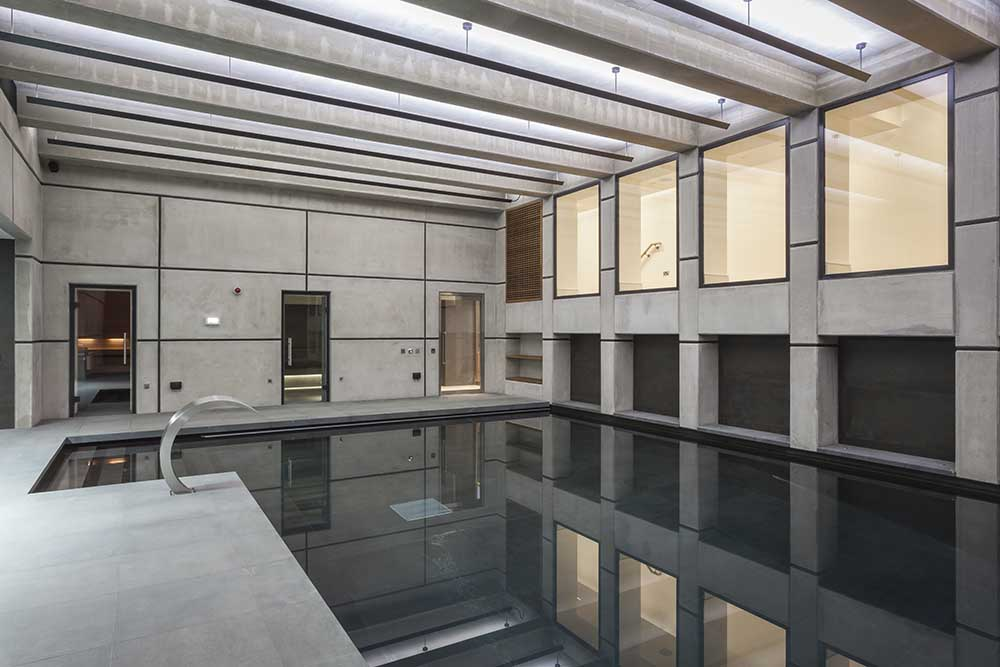
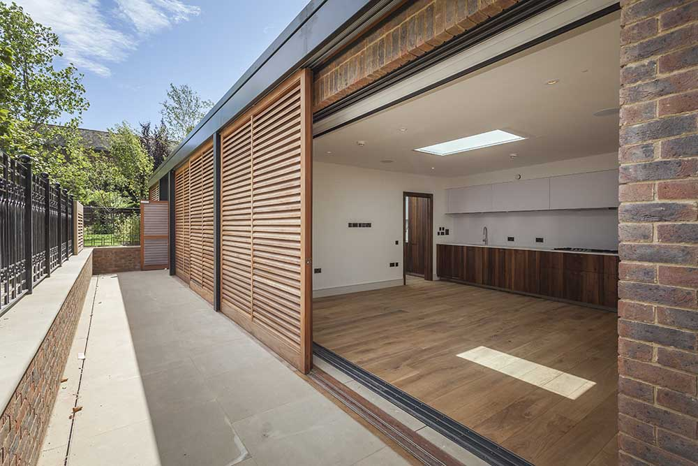

Architecture
Office Complex-SPA and GYM
680m2
Completed
This project involved the design and construction of a residential basement swimming pool complex adjacent to an existing four-storey Georgian house. A stepped basement corridor connects the main residence to an expansive leisure area comprising a swimming pool, gymnasium and changing facilities, complemented by a sauna, steam room and a lounge space fully integrated with media and audio systems. Built-in seating surrounds the pool area, enhancing comfort and spatial continuity. Above the basement level, the project also included the design and construction of a single-storey residential annexe and garage, featuring a two-person bedroom, an open-plan kitchen and living area with associated amenities. The annexe is set within a generous garden, incorporating a balanced composition of hard and soft landscaping.





